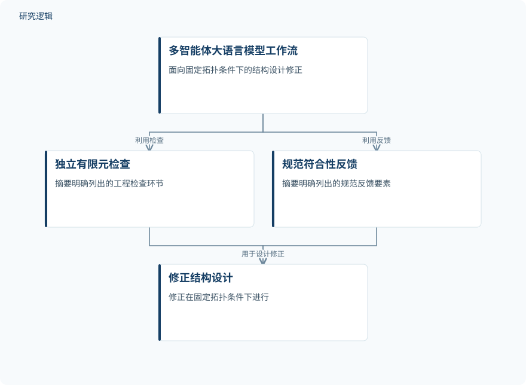

摘要解读
验证驱动的闭环多智能体大语言模型框架：面向规范合规的结构设计
Verication-driven closed-loop multi-agent large language modelframework for code-compliant structural design
解读更新 2026-10-16 15:43 · 依据公开摘要整理，未核验全文细节
大语言模型能生成结构设计，却未必能确认设计符合规范。这项研究把外部有限元核验与规范反馈接入修复闭环，关注如何让设计修改受可核查的工程约束引导，而非只依赖模型自我纠错。
文章目录
生成设计之后，谁来核验安全与合规？
摘要指出，现有多智能体大语言模型结构设计系统多采用一次性生成，且无法核验自身输出，因此难以适应安全关键任务。这里的核心问题不是模型能否给出方案，而是方案中的违规能否被识别，并转化为明确的修复依据。
外部核验驱动双节点修复
框架将三层有限元核验系统与双节点循环结合，把外部物理核验器的反馈送入修复过程。节点1将规范违规转化为硬性修复约束；节点2将四维质量评分转化为安全优先的软约束。两类反馈分别对应必须处理的违规与质量评价要求。
检索增强的规范库使每项违规能够追溯至具体条款。由此，修复不只依赖模型自行判断，还获得了外部核验结果与规范条文的支持。不过，摘要没有展开三层核验的具体分工及四维评分的组成。
依据摘要整理的核验—修复闭环


概括外部核验、双节点约束与规范追溯之间的关系，仅为摘要示意，并非论文原图。
下载 SVG图示关系说明
实线表示相邻阶段的信息流，虚线表示跨阶段联系或反馈。
结构设计方案 → 外部物理核验：核验设计；外部物理核验 → 节点1：硬约束：规范违规反馈；外部物理核验 → 节点2：软约束：质量评价反馈；检索增强规范库 → 节点1：硬约束：违规条款追溯；节点1：硬约束 → 修复设计：硬约束；节点2：软约束 → 修复设计：安全优先软约束；修复设计 → 外部物理核验：闭环核验
合规率提高，同时减少材料用量
摘要报告，在44个案例中，规范合规率由56.8%提高至98.6%，综合评分由63.8升至71.4（p<0.000001），材料用量约减少5.8%。这些结果呈现出合规、综合质量与材料用量同时改善的表现，但具体指标口径仍需进一步查阅。
消融比较显示，移除任一节点都会使性能下降。在测试的两个骨干大语言模型之间，合规率未出现可检测的变化；作者据此将这里的合规表现归因于外部核验器，而非模型本身。摘要还说明，框架、案例基准与全部实验脚本已开源。
摘要尚不足以界定验证边界
当前资料仅支持摘要层面的解读。案例的选取与分布、荷载及边界条件、适用规范、合规率分母、综合评分权重和材料用量的比较基准，均无法从摘要判断；统计检验方法与修复计算成本也未交代。
两个骨干模型间未检测到合规率变化，不等于所有模型都等效，也不能据此断言模型能力不再重要。现有摘要同样不足以确认实际工程部署、安全保证或更广泛条件下的泛化表现；这些是待查信息，不代表论文未做相关工作。
阅读启发：重点追问反馈怎样约束修改
阅读启发：对结构生成式设计而言，值得关注的是核验结果如何变成模型可执行的修复要求。进一步阅读时，可重点查看硬约束与软约束发生冲突时如何处理、违规与条款如何对应，以及修复循环如何终止。这些问题直接关系到闭环是否清晰、可追溯。
以上为本站阅读启发与建议，不是论文已验证的结论。